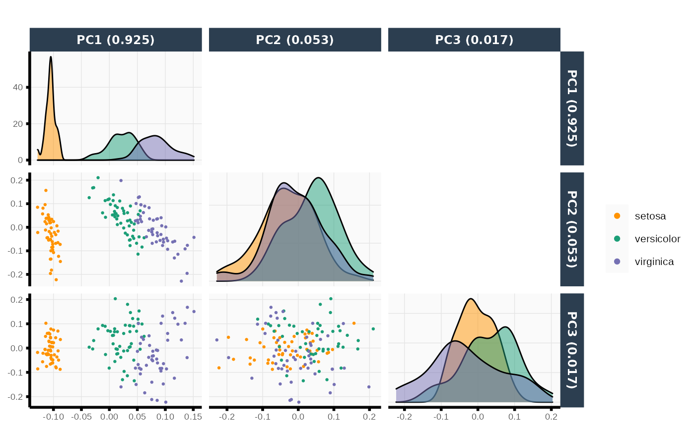
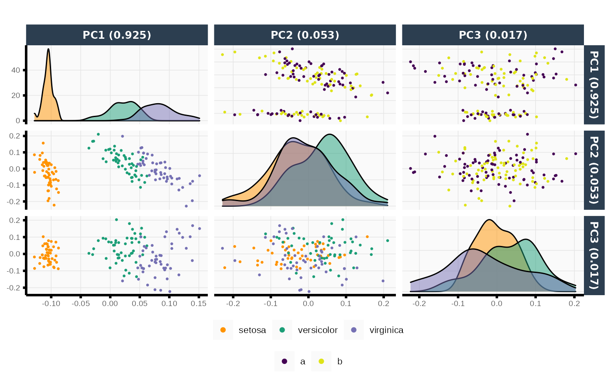

plotPCA.RdRun PCA on the given data matrix and generates PC plots for the specified principal components.
plotPCA(
X,
pca_obj,
npcs,
pcs,
color = NULL,
color_upper = NULL,
color_label = "",
color_upper_label = "",
color_scheme = NULL,
color_scheme_upper = NULL,
point_size = 0.5,
point_alpha = 1,
subsample = 1,
show_var = TRUE,
center = TRUE,
scale = FALSE,
title = "",
show_plot = FALSE,
...
)Data matrix or data.frame on which to perform PCA. Must specify
either X or pca_obj.
Output of previous run of plotPCA() to avoid re-computing SVDs
(i.e., the PC loadings and scores) again. Must specify either X or
pca_obj. Ignored if X is provided.
Number of top PCs to plot. Must specify either npcs or
pcs.
Vector of which PCs to show. Must specify either npcs or
pcs. Ignored if npcs is provided.
(Optional) Data vector to use as colors for lower ggplot panels.
(Optional) Data vector to use as colors for upper ggplot panels.
Character string. Label for color legend title (used in lower ggplot panels).
Character string for color_upper legend title (used in upper ggplot panels).
(Optional) Vector of colors to set manual color
scheme corresponding to color_lower argument (i.e., the color scheme in the
lower panels). If NULL (default), viridis color scheme is used.
(Optional) Vector of colors to set manual color
scheme corresponding to color_upper argument (i.e., the color scheme in the
upper panels). If NULL (default), viridis color scheme is used.
Point size for [ggplot2::geom_point()].
Alpha value for [ggplot2::geom_point()].
Proportion of rows to subsample and plot.
Logical. Whether or not to show the proportion of variance explained in axes labels.
Logical. Whether or not to center data for PCA.
Logical. Whether or not to scale data for PCA.
Character string. Title of plot.
Logical. Should this plot be printed? Default FALSE.
Other arguments to pass to pretty_ggplot_theme()
or theme_function()
A list of four:
A ggplot object of the PC pair plots.
A matrix with the PC scores.
A matrix with the PC loadings.
A vector of the proportions of variance explained.
out <- plotPCA(X = iris[, -5], npcs = 3, color = iris$Species)
#> Registered S3 method overwritten by 'GGally':
#> method from
#> +.gg ggplot2
out$plot

iris2 <- data.frame(iris, z = rep(letters[1:2], length.out = nrow(iris)))
out <- plotPCA(X = iris2[, -c(5, 6)], npcs = 3,
color = iris2$Species, color_upper = as.factor(iris2$z))
out$plot
